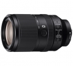

是首款达到300mm焦距的E卡口全画幅镜头，通过使用多片ED和非球面镜片以及索尼纳米抗反射镀膜，使得这款镜头在整个变焦范围内都拥有很高的成像质量。在光线昏暗的情况下大家也不必担心，镜头内部搭载了光学防抖技术，可补偿摄影师因手抖产生的影响。为了给用户在多种环境中使用，FE 70-300 F4.5-5.6 G OSS还采用了防尘、防滴溅设计，防护性能优异。
优秀的E口长焦变焦头
全程分辨率高，全开也是如此，相对来说长焦端略若，但是全开也可以数毛的； 按钮齐全，功能足够，防抖和对焦都很强，长焦端的对焦也毫不犹豫； 做工还不错；
还是重了点； 相对总量来说，直径更突出； 价格目前还太高，虽然已经购入，但还是觉得六千多才是合理价位。
更正：本人疏忽 将此镜头 机械结构 误填 应给 5.还是很满意的。
同上
终于有 E口长焦原生镜了整个焦段 成像俱佳，操纵性 很方便 ，除了拍风景，用于长焦 拍微距 也很方便，OSS很实用，很满意的一只头。
成像佳 操纵性 好较70--200轻巧，不那么张扬但长出100是很有用的， 可拍微距 阻尼适宜做工扎实。
价格贵了点儿。
成像扎实，E口最长焦的头，相对来说尚算轻便，风景利器。其实相对24240来说只能算小幅提升，如果是740，即使光圈略小些....也会惊艳得多
做工优秀，全焦段成像优异，特别是长焦（24240的240端其实很松散了）
重量，价格